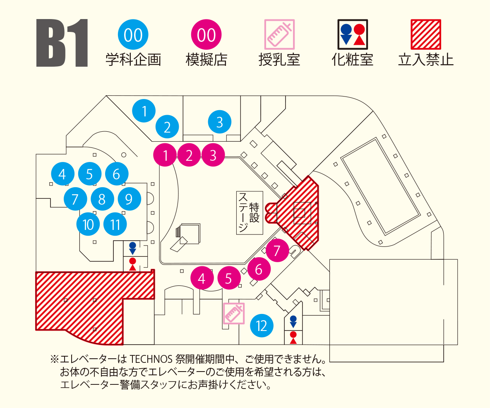

展示・店舗

- プロジェクション・マッピングMs音響芸術科(1年生)
最新映像技術を駆使し、音と映像の融合！ エンターテイメント☆ - サウンドホラー&アート音響芸術科(2年生)
音響１年生による自己満足作品。ぜひ広い心でご静聴下さい。 - 恐怖体験! サスペンスホラー屋敷コンサート・イベント科&放送芸術科
殺人現場に閉じ込められたあなた。この恐怖から抜け出せるか… - EGD 総選挙グラフィックデザイン科
１年生の作品が集合！ みんなで１位を決めよう！ 清き一票を！ - マンガ・イラスト展示マンガ科
世界一周旅行をテーマにイラストコンテストを開催します！ - おもちゃ作品展示ゲームクリエーター科 おもちゃクリエーターコース
学科紹介、作品展示と玩具の試遊。 - ゲーム作品展示ゲームクリエーター科 ゲームクリエーターコース
学生が制作したゲームを是非体験しに来てください！ - MOW 出れない!? 迷宮牧場Webクリエータ科/CGクリエータ科
Webの技術でクイズゲームを作りました！ 是非プレイしてください。 - ♡わくわくフォトぎゃらりぃ♡写真部
あんずとくるみのわくわくフォトぎゃらりぃ 遊びにき・て・ね♡ - 謎解きゲームマンガ科
君はこの難解な謎が解けるか！？ - ポストカード販売・似顔絵販売マンガ科
似顔絵はお顔の写真撮影１時間後のお渡しになります！ お気軽に！ - 建築と獣の呪いのおたけび建築学科
封印から解かれた野獣の暴走からあなたは生きて帰れるか！！
- すずパンケーキ(串)スポーツビジネス
甲府在住の美輪が作る、絶品すずパンケーキをぜひ召し上がれ～！ - 元祖大村おじさんのシチュー屋建築学科 B
シチューの常識をかえた！！ まさにシチュー革命。 - 沖縄菓子 ちんびんホテル科2年
モチモチ食感で黒糖風味のクレープのような沖縄の郷土菓子です！！ - 美味爆発ね…♥クレープ屋東京工学院日本語学校
東京工学院日本語学校からの多国籍なフレーバーを皆様にお届け！ - イタリア名物!ヌテラサンドサッカービジネスコース
イタリア名物のチョコレート「ヌテラ」を使用したホットサンド。 - DANGO BALLD&Bcorporation
我が社の発明品達を食べると口の中が摩訶不思議アドベンチャー！ - マッチョドラゴンリターンズスポーツビジネス科2年
前回感動を呼んだあのマッチョドラゴンが今ふたたび…
- アニメーション科ギャラリーアニメーション科
作品展示・上映を行います。ポストカード等の無料配布も行います。 - こどもの世界 ～手作り作品～幼児教育学科/こども学科/教育専攻科
こども達の夢が広がるおもちゃを手作りしました！ - AtoZ FES Vol.1コンサート・イベント科
ライブハウスAtoZで朝から晩までライブをします！！！！！！！！！！！！！ - 演劇フェスティバル2014演劇・声優科
アクションあり、笑いあり、涙ありのステージをお届けします！
- 音屋のホットドック＆タピオカ音響芸術科（２年生）
ここで一句。音屋から、お腹に届く、ラブレター、真心込めて、響くこの味。 - やきそばみっちょんミュージック科
おいしい焼きそばを作って待ってるのでぜひ来てください。 。 - 北海道産『天使のじゃがぽた』ホテル科（２年生）
温かいおもてなしで、じゃがいものスープと幸せを提供します。 - 大将のうどん経営情報科
経営情報科伝統のうどんです。温かいうどんをどうぞ！ - ド○えもんもビックリ！ 三笠焼きホテル科（２年生）
どら焼きじゃないの？ あの国民的キャラも驚く三笠焼きです！ - 豚と汁の女王Let it goあたたまろうブライダル科（２年生）
真実の愛で作り上げた豚汁で冷え切った心も身体も温めます♥♥♥ - うまかもんもんホテル科（２年生）
九州の名産を合わせて作った「だんご汁」を提供します。 - 本場の隣の明石チーズ焼き音響芸術科
本場の隣直伝！！ 安くて早くて安心！！ それに美味しい…かも？ - とりっぴーの焼き鳥国技館建築学科
店長自らイチオシの鶏肉を日本各地から探しまわりました！！ - おぞうにや情報システム科
関東風の鰹だしとお醤油で仕上げたシンプル雑煮を召し上がれ。 - あげーるタコグラフィックデザイン科
グラフィックデザイン科が揚げた「たこ焼き」は一味違う！ - あげもの屋コンサート・イベント科
３種類の揚げもので、皆さんのテンションもアゲアゲ↗↗にします！ - ワンタントラベル観光旅行科
観光旅行科が作る温かワンタン片手に校内旅行してくださいっ！ - 焼々苑（ジュジュエン）スポーツビジネス科
豪快にカブリつけ！ 新感覚！ お好み焼き！ - 手作りどんどん焼きホテル科（２年生）
山形の郷土料理を心を込めて１から手作りで提供いたします！ - じゃがばたー放送芸術科
ホクホクのじゃがいもをお好みのトッピングでどうぞ！
- Jordan Journey英語キャリア科
まだ見たことのない異国の地-ヨルダンへ。Let's go！ - エキゾチックFly awayエアライン科
今年のエアライン科は２部構成！ それぞれの個性をお楽しみ下さい！ - エアトラEXPO観光旅行科
旅行好きの旅行科がおくる、世界を巡る博覧会っ！！！ - エアトラ鉄道博物館鉄道交通科
ここはまるで博物館…？ 是非一度お越しください！！
- Let’ sシェア パスティー
エアポートサービス科/ビジネスマナー・秘書科/ファッションビジネス科/研究科
皆でシェアしながら食べられる、カリカリ美味しい揚げパスタです。 - 名古屋名物たません空旅鉄道交通科
名古屋の露店でよく見掛けるえびせんで具をトッピングした名物！ - おやきのちゃなこ亭ホテル科（２年生）
長野県の郷土料理である「おやき」を提供する店舗です。 - エアトラーメン鉄道交通科/エアライン科
そうだ！ ラーメン、食べよう。
- 模擬裁判
大学併修学科 法律情報コース/法律情報科 ※11/1（土）のみ開催
究極のミステリー！ 本当の正義とは何か、決めるのはあなた自身！ - パソコン教室をはじめます。
経営情報科/大学併修学科 経営情報コース
Excelのあっと驚く裏ワザを紹介しちゃいます♪ - 電気遊技場電気電子学科
電気電子学科が作製した３つのゲームに挑戦！
- おいでよ焼き鳥の森鉄道交通科/エアライン科
新感覚焼き鳥の誰も食べたことがない未知の味。お試しあれ。 - Caffe MOANA経営情報科/大学併修学科 経営情報コース
毎年大人気の名物焼肉ドック！！ 今年はクレープもあるよ！！ - すぎとも。ども学科（３年生）
シェフがうなった死ぬまでに一度は食べたいやきそば。